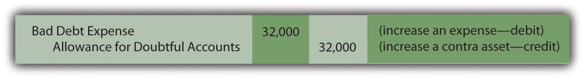
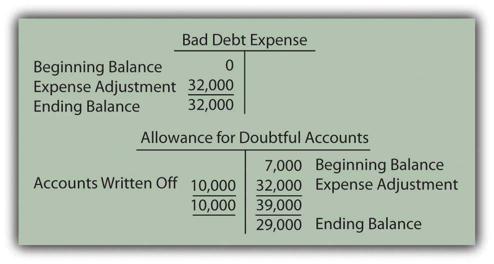
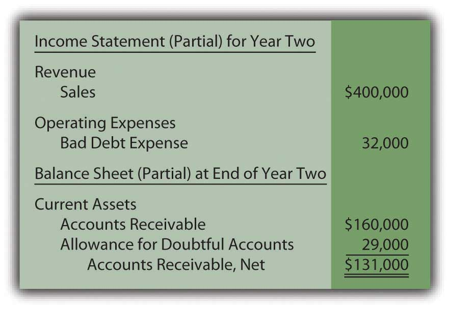
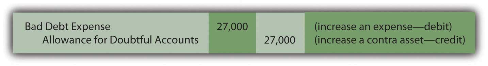
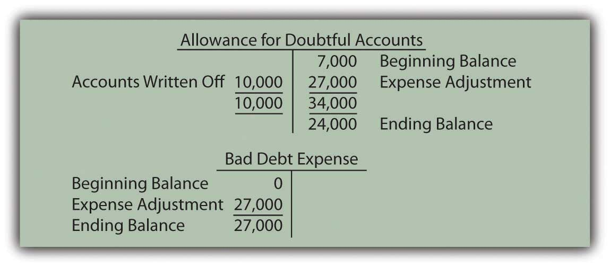
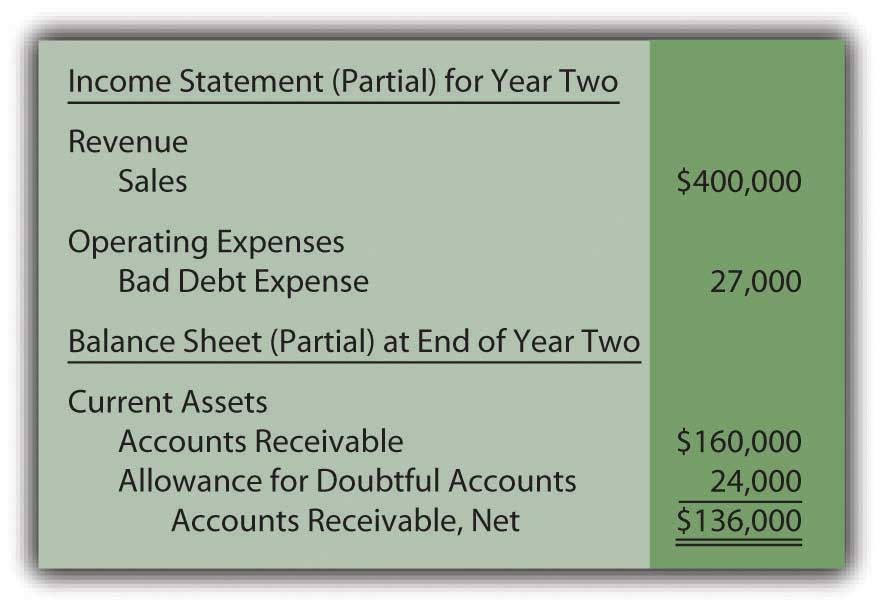

At the end of this section, students should be able to meet the following objectives:
Question: The final step in reporting receivables at the end of Year Two is the estimation of the bad accounts incurred during this second year and the preparation of the related adjusting entry. According to the ledger balances, sales on credit for the year were $400,000, remaining accounts receivable amount to $160,000, and a $3,000 debit sits in the allowance for doubtful accounts. No entry has yet been made for the Year Two bad debt expense. How is the estimation of uncollectible accounts derived each year?
Answer: Much of financial accounting is quite standardized. However, estimations can be made by any method that is considered logical. After all, it is an estimate. Over the decades, two different approaches have come to predominate when predicting the amount of uncollectible accounts. As long as company officials obtain sufficient evidence to support the reported numbers, either way can be applied.
Percentage of sales methodThe income statement approach for estimating uncollectible accounts that computes bad debt expense by multiplying credit sales by the percentage that are not expected to be collected.. This alternative computes doubtful accounts expense by anticipating the percentage of sales (or credit sales) that will eventually fail to be collected. The percentage of sales method is sometimes referred to as an income statement approach because the only number being estimated (bad debt expense) appears on the income statement.
Percentage of receivables methodThe balance sheet approach for estimating uncollectible accounts that computes the allowance for doubtful accounts by multiplying accounts receivable by the percentage that are not expected to be collected.. Here, the proper balance for the allowance for doubtful accounts is determined based on the percentage of ending accounts receivable that are presumed to be uncollectible. This method is labeled a balance sheet approach because the one figure being estimated (the allowance for doubtful accounts) is found on the balance sheet. A common variation used by many companies is the “aging methodVariation of percentage of receivables method where all receivables are categorized by age; the total of each category is multiplied by an appropriate percentage and then summed to determine the allowance balance.,” which first categorizes all receivable balances by age and then multiplies each of the individual totals by a different percentage. Normally, a higher rate is used for accounts that are older because they are considered more likely to become uncollectible.
Question: Assume that this company chooses to use the percentage of sales method. All available evidence is studied by officials who come to believe that 8 percent of credit sales made during Year Two will prove to be worthless. In applying the percentage of sales method, what adjusting entry is made at the end of the year so that financial statements can be prepared?
Answer: According to the general ledger, the company generated $400,000 in credit sales during Year Two. If uncollectible accounts are expected to be 8 percent of that amount, the expense is reported as $32,000 ($400,000 × 8 percent). Bad debt expense (the figure estimated) must be raised from its present zero balance to $32,000.
Figure 7.8 Adjusting Entry for Year Two—Bad Accounts Estimated as a Percentage of Sales
This adjustment increases the expense to the appropriate $32,000 figure, the proper percentage of the sales figure. However, the allowance account already held a $3,000 debit balance ($7,000 Year One estimation less $10,000 accounts written off). As can be seen in the T-accounts, the $32,000 recorded expense results in only a $29,000 balance for the allowance for doubtful accounts.
Figure 7.9 Resulting T-Accounts, Based on Percentage of Sales Method
After this adjustment, the figures appearing in the financial statements for Year Two are as follows:
Figure 7.10 Bad Accounts Estimated Based on 8 Percent of Sales
Link to multiple-choice question for practice purposes: http://www.quia.com/quiz/2092879.html
Question: How can bad debt expense be reported as $32,000 while the allowance for doubtful accounts shows a balance of only $29,000? Should those two numbers not always be identical in every set of financial statements?
Answer: In this introductory coverage, the difference in these accounts is assumed to be caused solely by the failure of previous estimations to be accurate.See immediately preceding endnote for other reasons as to why these balances can differ. Last year, the doubtful accounts expense for this company was reported as $7,000 but accounts with balances totaling $10,000 proved to be uncollectible. Because companies do not go back to the statements of previous years to fix numbers when a reasonable estimate was made, the expense is $3,000 higher in the current period to compensate.
Mechanically, the underestimation still exists in the accounting records in Year Two. It creates the $3,000 debit in the allowance for doubtful accounts before the expense adjustment. Thus, although the current expense is $32,000 (8 percent of sales), the allowance is reported as only $29,000 (the $32,000 expense offset by the $3,000 debit balance remaining from the prior year).
Students are often concerned because these two reported numbers differ. However, both are merely estimates. The actual amount of worthless accounts is likely to be a number somewhat different from either $29,000 or $32,000. Therefore, the disagreement caused by the lingering impact of the $3,000 Year One underestimation should not be an issue as long as company officials believe that neither of the reported balances is materially misstated.
Question: The percentage of receivables method handles this process a bit differently. Assume that the Year Two adjusting entry has not yet been made so that bad debt expense remains at zero and the allowance for doubtful accounts still holds a $3,000 debit balance. However, the company has chosen to use the percentage of receivables method rather than the percentage of sales method. Officials have looked at all available evidence and come to the conclusion that 15 percent of ending accounts receivable ($160,000 × 15 percent or $24,000) is most likely to prove to be uncollectible. How does application of the percentage of receivables method affect the recording of doubtful accounts?
Answer: The percentage of receivables method (or the aging method if that variation is used) views the estimated figure of $24,000 as the proper total for the allowance for doubtful accounts. Thus, the accountant must turn the $3,000 debit balance residing in that contra asset account into the proper $24,000 credit. That change can only be accomplished by recognizing an expense of $27,000. Under the percentage of receivables method, after the adjustment has been recorded, the allowance balance will equal the estimate ($24,000). The expense is the amount needed to arrive at this allowance figure.
Figure 7.11 Adjusting Entry for Year Two—Bad Accounts Estimated as a Percentage of Receivables
As shown in the T-accounts below, this entry successfully changes the allowance from a $3,000 debit balance to the desired $24,000 credit. Because bad debt expense had a zero balance prior to this entry, it is now based solely on the $27,000 amount needed to establish the proper allowance.
Figure 7.12 Resulting T-Accounts, Based on Percentage of Receivables Method
After this adjusting entry, the figures appearing in the financial statements for Year Two are as follows:
Figure 7.13 Bad Accounts Estimated Based on 15 Percent of Receivables
Once again, the difference between the expense ($27,000) and the allowance ($24,000) is $3,000 as a result of the estimation being too low in the prior year. The current year expense must be higher.
Either approach can be used as long as adequate support is generated for the numbers reported. They are just two ways to estimate the effect of bad debts. However, financial accounting does stress the importance of consistency to help make the numbers comparable from year to year. Once a method is selected, it normally must continue to be used in all subsequent periods.
Under the percentage of sales method, the expense account is aligned with the volume of sales. In applying the percentage of receivables method, determining the uncollectible portion of ending receivables is the central focus. Regardless of the approach, both bad debt expense and the allowance for doubtful accounts are simply the result of estimating the final outcome of an uncertain event—the collection of accounts receivable.
Link to multiple-choice question for practice purposes: http://www.quia.com/quiz/2092880.html
Question: A company such as Dell Inc. must have thousands or even hundreds of thousands of separate receivables. The accounts receivable T-account maintains the total dollar amount owed to the company but does not indicate the balance due from each individual customer. How does an accounting system monitor all the specific receivable amounts? That has to be essential information for any organization for billing and collection purposes.
Answer: As indicated, a general ledger account only reflects the total at the present time. In many cases, as with accounts receivable, the composition of that balance is also important information. For those T-accounts, the accounting system can be expanded to include a subsidiary ledgerGroup of individual accounts whose sum totals (and, therefore, explains) a general ledger account balance. to maintain data about the various individual components making up the account total.
In the previous illustration, the company reports $160,000 as the total of its accounts receivable at the end of Year Two. A separate subsidiary ledger should be in place to monitor the amounts owed by each customer (Mr. A, Ms. B, and so on). The general ledger figure is used whenever financial statements are to be produced. The subsidiary ledger allows the company to access individual account balances so that appropriate action can be taken if specific receivables grow too large or become overdue.
When a subsidiary ledger is maintained, the accounting system can be programmed so that each entry into the designated general ledger T-account requires an immediate parallel increase or decrease to the appropriate individual account. Thus, a $75 sale on credit to Mr. A raises the overall accounts receivable total in the general ledger by that amount while also increasing the balance listed for Mr. A in the subsidiary ledger.
Subsidiary ledgers can be utilized in connection with any general ledger account where the availability of component information is helpful. Other than accounts receivable, they are commonly set up for inventory, equipment, and accounts payable. As might be imagined, big companies maintain subsidiary ledgers for virtually every T-account, whereas small companies are likely to limit use to accounts receivable and—possibly—a few other large balances.
Before computer systems became common, keeping the total of thousands of individual accounts in a subsidiary ledger in agreement with the corresponding general ledger T-account balance was an arduous task. Mechanical errors (mathematical problems as well as debit and credit mistakes) tended to abound. However, current electronic systems are typically designed so that the totals reconcile automatically.
Each year, an estimation of uncollectible accounts must be made as a preliminary step in the preparation of financial statements. Some companies use the percentage of sales method, which calculates the expense to be recognized, an amount which is then added to the allowance for doubtful accounts. Other companies use the percentage of receivable method (or a variation known as the aging method). It determines the ending balance for the allowance. The reported expense is the amount needed to adjust the allowance to this ending total. Both methods provide no more than an approximation of net realizable value based on the validity of the percentages that are applied.